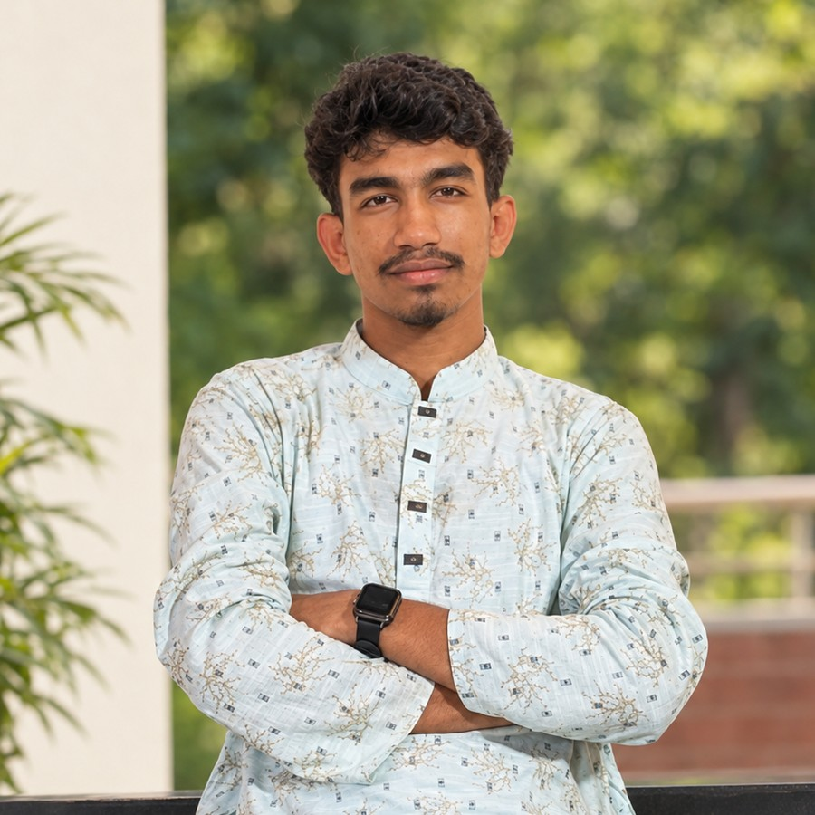

K M Ahbab Zaman Aqib
B.Sc. in Agriculture, Sylhet Agricultural University
I study how rice copes with salt. My work measures proline, MDA and antioxidant enzymes in salt-tolerant and salt-sensitive genotypes, and uses plant bioinformatics and molecular docking to look at the genes and proteins behind stress responses.

Research interests
My focus is making crops more resilient to climate stress, from the field and greenhouse to the genome.
Education
B.Sc. in Agriculture
Sylhet Agricultural University, Sylhet-3100, Bangladesh. CGPA 3.38
Higher Secondary Certificate
Dhaka Residential Model College, Dhaka-1207, Bangladesh. GPA 5.00
Secondary School Certificate
Nabin Chandra Model High School, Kulaura-3230, Bangladesh. GPA 5.00
Experience
Undergraduate researcher (self-directed)
Department of Agronomy, Sylhet Agricultural University. Advisor: Professor Dr. Md. Mozammel Haque.
- Characterizing contrasting rice varieties under salinity stress, physiologically and biochemically.
- Measuring proline accumulation, MDA levels and antioxidant enzyme activities (SOD, POD, CAT).
- Analyzing experimental data in R with ANOVA and descriptive statistics.
- Reviewing literature on abiotic stress tolerance in rice for climate-resilient crop development.
Biology instructor
Phoenix Coaching Centre, Kulaura, Sylhet, Bangladesh.
- Teaching SSC and HSC Biology: cell biology, genetics, plant physiology and ecology.
- Preparing lesson plans, study materials and model test papers aligned with the national curriculum.
- Mentoring students on exam preparation strategies.
Projects
Physiological and biochemical characterization of contrasting rice varieties under salinity stress
Ongoing research project, Department of Agronomy, Sylhet Agricultural University. Crop stress tolerance and improvement.
- Comparing salt-tolerant and salt-sensitive rice genotypes at the seedling stage.
- Physiological parameters: shoot and root length, fresh and dry weight, relative water content (RWC) and SPAD chlorophyll index.
- Biochemical markers: proline content, lipid peroxidation (MDA) and antioxidant enzyme activity.
- Variety-level differences tested with ANOVA and post-hoc tests in R.
- Aim: identify stress-tolerance biomarkers for future breeding programs.
Rad5/16-like gene family in Arabidopsis thaliana
Genome-wide identification and characterization, with developmental, hormonal and stress-responsive expression. Manuscript in preparation.
Publications
No peer-reviewed publications yet. Two manuscripts are in preparation.
Physiological and biochemical responses of contrasting rice varieties under NaCl-induced salinity stress
Manuscript in preparationGenome-wide identification and characterization of the Rad5/16-like group gene family in Arabidopsis thaliana with their developmental, hormonal, and stress-responsive expression
Manuscript in preparationSkills and tools
Programming and data analysis
Rggplot2dplyrtidyrANOVARegressionCorrelationPCADescriptive statisticsExcelBioinformatics
NCBI GenBank and BLASTMEGAPrimer3SnapGeneUniProtEnsembl PlantsKEGGGene OntologyMEME SuiteAlphaFoldSWISS-MODELPyMOLAutoDock VinaPyRxCB-Dock2PlantCARELaboratory and field
Chlorophyll contentRWCElectrolyte leakageProlineMDASOD, POD, CAT assaysSalinity experiment designGreenhouse managementCTAB DNA extractionGermination bio-assayPlant phenotypingLeadership and certifications
Leadership and activities
- President, Kulaura Students Association, Sylhet (2026 to present)
- Executive committee member, Public University Students Association of Kulaura (2024 to present)
- Scout member, Bangladesh Scouts: 10th Bangladesh National Scout Jamboree, 3rd SAANSO Scout Jamboree, and district-level camps
- Volunteer, community organizations for youth development, education awareness and community service in Kulaura, Moulvibazar
Contact
Open to research collaborations, graduate admission and scholarship opportunities.
- Emailahbabzaman.ag@student.sau.ac.bd
- Phone+880 1301 080280
- LinkedInK M Ahbab Zaman Aqib
- GitHubAqib-17
- ResearchGateKm-Aqib
- ORCID0009-0008-4057-3934
References
Dr. Md. Mozammel Haque
Professor, Department of Agronomy, Sylhet Agricultural University, Sylhet-3100, Bangladesh
hoquem.aha@sau.ac.bdDr. Sayeda Sultana
Professor, Department of Genetics and Plant Breeding, Sylhet Agricultural University, Sylhet-3100, Bangladesh
sultana.gpb@sau.ac.bd